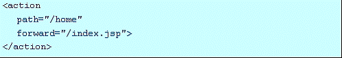
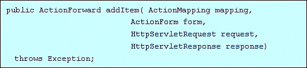

ITEEDU
5.5 使用Prebuilt Action 类提升开发效率
Struts framework带有好几个prebuilt Action类，使用它们可以大大节省开发时间。
其中最有用的是org.apache.struts.actions.ForwardAction 和
org.apache.struts.actions.DispatchAction.
使用ForwardAction
在应用程序中，可能会经常出现只要将Action对象转发到某个JSP的情况。在上一点中曾提到总是由Action调用JSP是个好习惯。如果我们不必在Action中执行任何业务逻辑，却又想遵循Action访问页面的话，就可以使用ForwardAction，它可以使你免去创建许多空的Action类。运用ForwardAction的好处是不必创建自己的Action类，你需要做的仅仅是在Struts配置文件中配置一个Action mapping。
举个例子，假定你有一个JSP文件index.jsp ，而且不能直接调用该页面，必须让程序通过一个Action类调用，那么，你可以建立以下的Action mapping来实现这一点：

正如你看到的，当/home 被调用时, 就会调用ForwardAction 并把请求转发到index.jsp 页面.再讨论一下不通过一个Action类直接转发到某个页面的情况，必须注意我们仍然使用元素中的forward属性来实现转发的目标。这时元素定义如下：

以上两种方法都可以节省你的时间，并有助于减少一个应用所需的文件数。
使用DispatchAction
DispatchAction是Struts包含的另一个能大量节省开发时间的Action类。与其它Action类仅提供单个execute()方法实现单个业务不同，DispatchAction允许你在单个Action类中编写多个与业务相关的方法。这样可以减少Action类的数量，并且把相关的业务方法集合在一起使得维护起来更容易。
要使用DispatchAction的功能，需要自己创建一个类，通过继承抽象的DispatchAction得到。对每个要提供的业务方法必须有特定的方法signature。例如，我们想要提供一个方
法来实现对购物车添加商品清单，创建了一个类ShoppingCartDispatchAction提供以下的方法：

那么，这个类很可能还需要一个deleteItem()方法从客户的购物车中删除商品清单，还有clearCart()方法清除购物车等等。这时我们就可以把这些方法集合在单个Action类，不用为每个方法都提供一个Action类。在调用ShoppingCartDispatchAction里的某个方法时，只需在URL中提供方法名作为参数值。就是说，调用addItem()方法的URL看起来可能类似于：
http://myhost/storefront/action/cart?method=addItem
其中method参数指定ShoppingCartDispatchAction中要调用的方法。参数的名称可以任意配置，这里使用的"method"只是一个例子。参数的名称可以在Struts配置文件中自行设定。